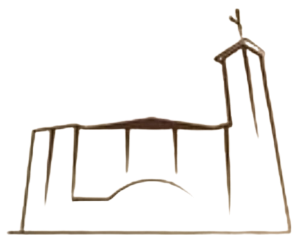

Preparação para a Confissão - Exame de Consciência
- Deixei, em alguma confissão anterior, algum pecado grave sem confessar?
- Deixei de rezar de manhã e de noite?
- Faltei à Santa Missa aos domingos e dias de Preceito?
- Fiquei fora da Igreja ou não prestei atenção?
- Fui à Santa Missa com roupas indecentes?
- Cheguei tarde à Sta. Missa, por culpa própria?
- Deixei de guardar o jejum e abstinência de carne nos dias prescritos pela Igreja?
- Por minha culpa, rezei mal, conversei na Igreja?
- Deixei de estudar a Religião?
- Li algum tipo de literatura contra a fé católica?
- Duvidei de alguma verdade da Fé, perdi a Fé em Deus?
- Tive vergonha de demonstrar minha Fé Católica?
- Deixei de ajudar a Igreja com o dízimo?
- Frequentei outras religiões ou seitas?
- Acreditei em horóscopos, tarôs, búzios, sortilégios etc.?
- Falei o nome de Deus sem respeito?
- Jurei por Deus, jurei falso?
- Blasfemei ou disse palavras injuriosas contra Deus?
- Fiz promessas e não as cumpri?
- Deixei de fazer a Páscoa (Confissão e Comunhão)?
- Desobedeci, fui malcriado, xinguei meus pais?
- Ofendi gravemente meus irmãos ou outras pessoas?
- Entristeci, de alguma forma, a meus pais?
- Dei mal exemplo para alguém?
- Fui grosseiro(a) em casa?
- Pensei mal, falei mal dos outros?
- Falei mentiras, fiz fofocas, fiz intrigas?
- Briguei sério com alguém?
- Neguei-me à reconciliação?
- Guardei raiva, desejei ou cometi vinganças?
- Ofendi alguém com palavras pesadas?
- Agredi alguém?
- Desejei mal a alguém?
- Fui culpado em levar alguém a pecar?
- Maltratei os animais?
- Prejudiquei a natureza?
- Roubei?
- Tive vicio (video game, celular,etc)
- Disse mentiras?
- Fui guloso?
